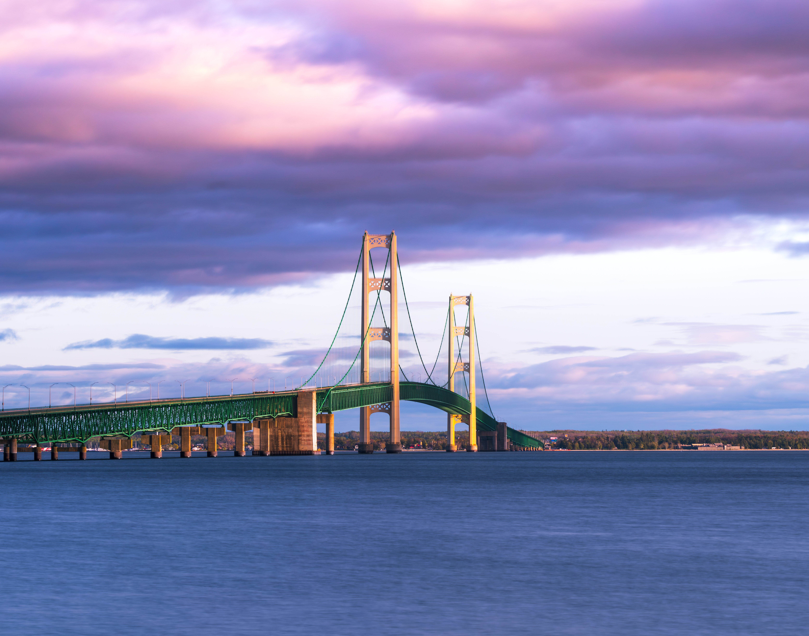
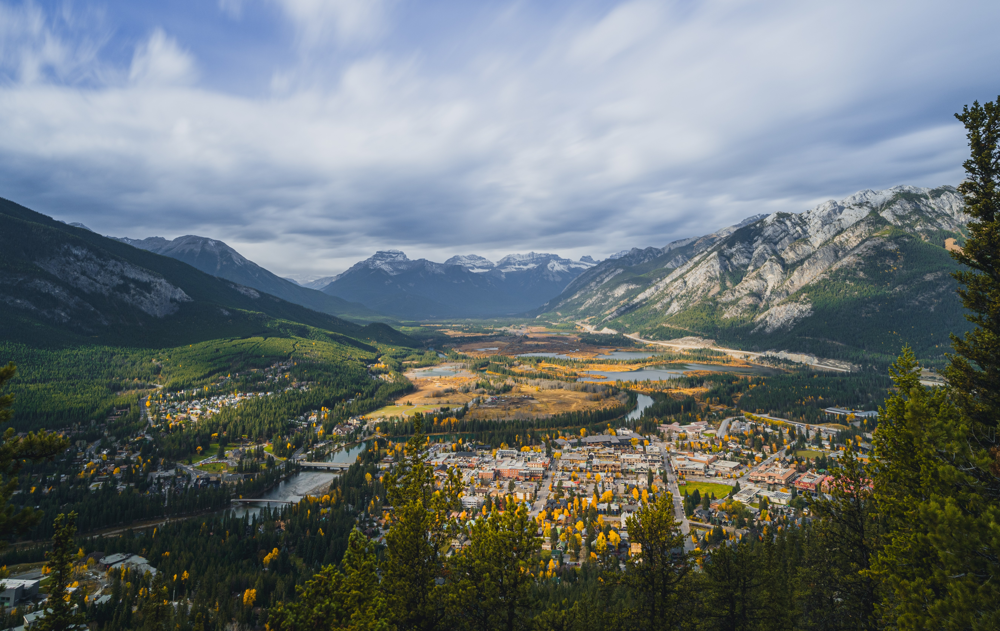
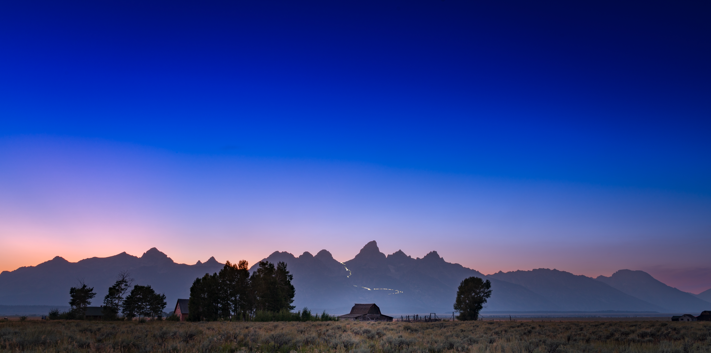
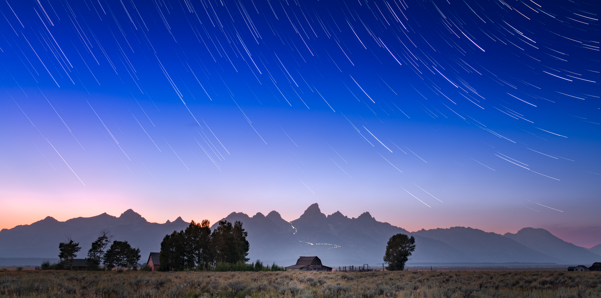
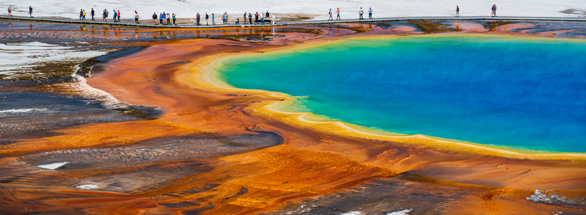
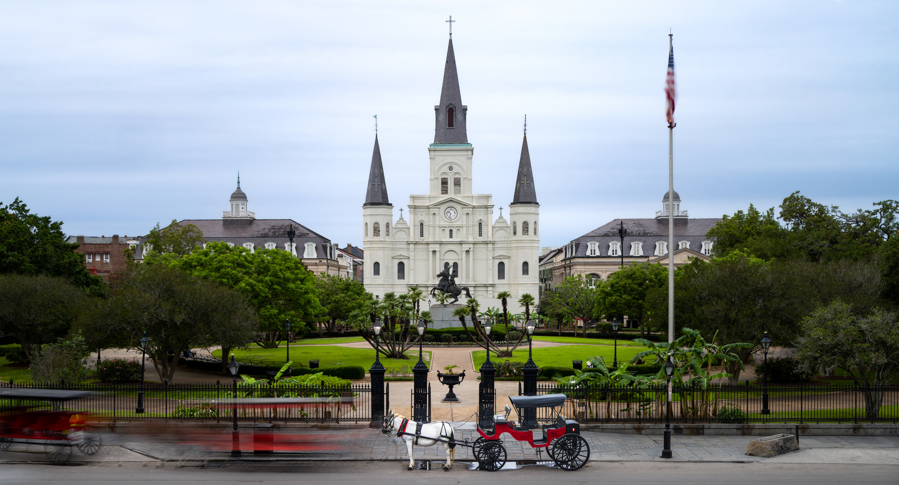
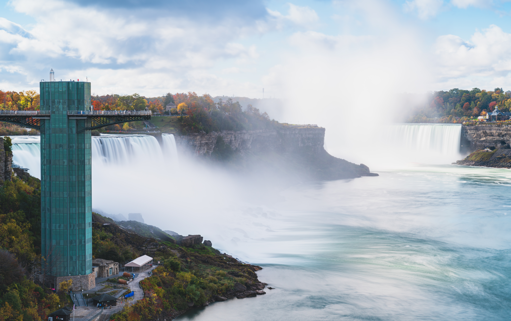

14 photographs
Michigan
Home state of michigan stretching all the way from the lower to the upper penninsula.

Field work in the mountains, coastlines, and quiet places in between. I show up before sunrise so you don't have to.


Slide for stars!

Home state of michigan stretching all the way from the lower to the upper penninsula.

Annual(ish) friends trip to Wyoming. Primarily Jackson and the Tetons, as well as Yellowstone National Park.

Photos from coast to coast and everything in between.
From river cruises down the Danube to a solar eclipse in Spain. This is Europe through my lens.

Catch all for my other photos.